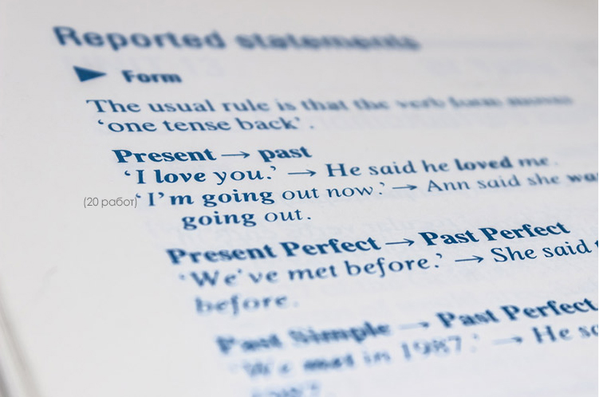

{kind=link}
Приятное напоминание о простых и понятных истинах. Спасибо автору). Хотелось бы лишь добавить: цените каждый день и момент своей жизни, живите настоящим, а не будущим и не прошлым
Времена английских глаголов: сколько и как запоминать?

Довольно часто мои ученики спрашивают, сколько нужно использовать времён глаголов для комфортного общения. Что ж, попробуем разобраться.»
Простое прошедшее, настоящее и будущее дают информацию о том, когда происходит или произошло событие. То есть, когда задача сводится к неглубокому общению с иностранцами, особенно не с носителями языка, — в отпуске, в интернете, по работе, — трёх форм достаточно.»
Откуда берется пассивная грамматика
Но если вам нужно широко использовать английский на работе (переговоры, презентации, conference-calls, деловые письма), общаться с иностранными друзьями или же вы живёте за границей и нацелены на близкое общение, необходимо оперировать хотя бы семью-восемью временами.
Многие слышали о том, что использование языка бывает пассивным и активным. Уточним, в чём разница.
Пассивное использование — это восприятие на слух или при чтении. Активное владение языком — это умение воспроизводить, то есть писать и говорить. Когда человек после языковых курсов говорит: «Я как та собака: всё понимаю, особенно когда читаю, а сказать не могу», — это как раз пассивное знание.
Особенно обидно бывает тем, кто неплохо ориентируется в так называемой пассивной грамматике. Человек читает и слушает тексты на английском, всё понимает и даже может объяснить использование той или иной конструкции. При этом как в письменной, так и в устной речи или не может сам построить правильную грамматическую конструкцию, или делает это мучительно и долго.
К сожалению, даже самое добросовестное выполнение письменных заданий в популярном учебнике грамматики совершенно не означает, что вы сможете в речи пользоваться такими же красивыми конструкциями, как там. И тому есть две основные причины:
Примерами тем могут служить:
— Как я провёл отпуск.
— Что мне снилось.
— Кто в какой одежде был на корпоративе.
— Шопинг и неудачная покупка.
— Неприятность, случившаяся в кафе.

6 комментариев

Приятное напоминание о простых и понятных истинах. Спасибо автору). Хотелось бы лишь добавить: цените каждый день и момент своей жизни, живите настоящим, а не будущим и не прошлым
Добавить комментарий